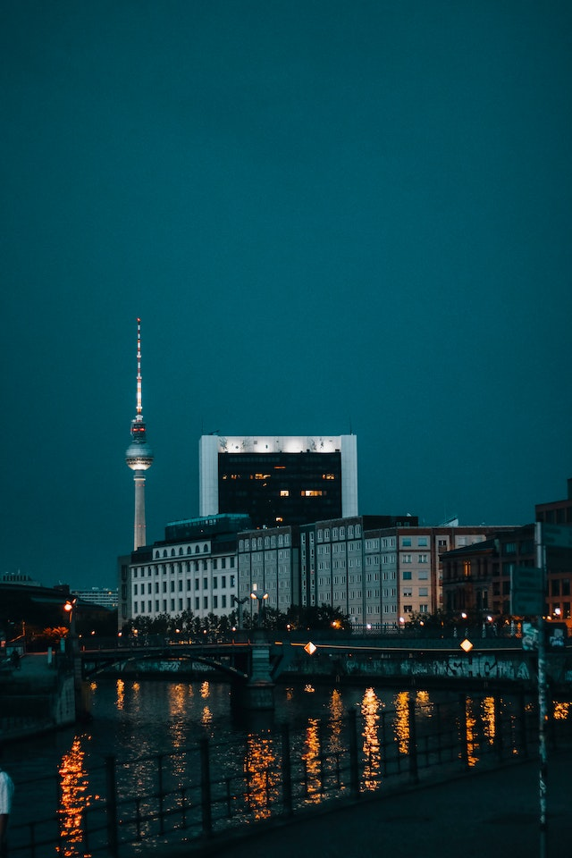
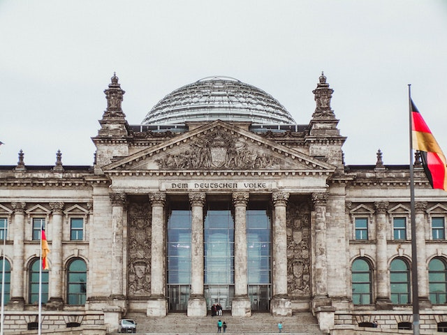

¿Cuantas veces hemos pensado con visitar ese lugar de nuestros sueños y cada vez parece más lejano?. Ya sea por la falta de tiempo o por que no se cuenta con los recursos suficientes. Pues dejanos contarte que no será más así.
Lo fácil y viable que es conocer la ciudad de tus sueños al alcance de unos sencillos clicks, desde tu ordenador o tableta lo pone más accesible reservando ahora.
Además de visitar la gran ciudad de la libertad "Berlín"; una de las ciudades más asombrosas y peculiares de la República Federal de Alemania, llena de cultura, arte, historia, comida y costumbres.
Podrás apreciar de su maravilloso y flagrante arte dentro de la isla de los museos; acompañado de sus diferentes iglesias con su peculiar arquitectura.
Así mismo, te adentrarás en una de las ciudades más multiculturales de toda europa. Caminando por las grandes calzadas encomntrarás el famosisimo "bratwurst" y claro no podía faltar su acompañante "schnitzel"; qué son las comidas más famosas en toda Alemania. Y sí solo tienes tiempo para un par de días tendrás que visitar la imponente puerta de Brandeburgo, y la icónica "plaza de Alexander" en el corazón de la ciudad. La aceptación y pluralidad de género son grandes contribuyentes en la gran metrópoli. Siendo considerada cómo una de las ciudades gay friendly más diversas en toda la unión europea.
También para los amantes de la vida nocturna hay recreación. Abundan los bares, discotecas y centros nocturnos dónde se puede disfrutar de una rica cerveza o un sencillo trago de alcohol. La gran historia que antecede a esta ciudad es un ejemplo de como sociedades tan diferentes han podido unirse para hacer una sola ciudad y mostrar al mundo que lo más importante es la libertad.
Uno de los monumentos más importantes de la ciudad por los judíos de europa asesinados durante el periodo de la alemania nazi.
Conocerás la antigua zona de control militar que funcionó entre los años 1945 y 1990 como el más famoso paso fronterizo del siglo XX.
Te invitamos a conocer los mejores lugares de interés que Berlín ofrece para ti.